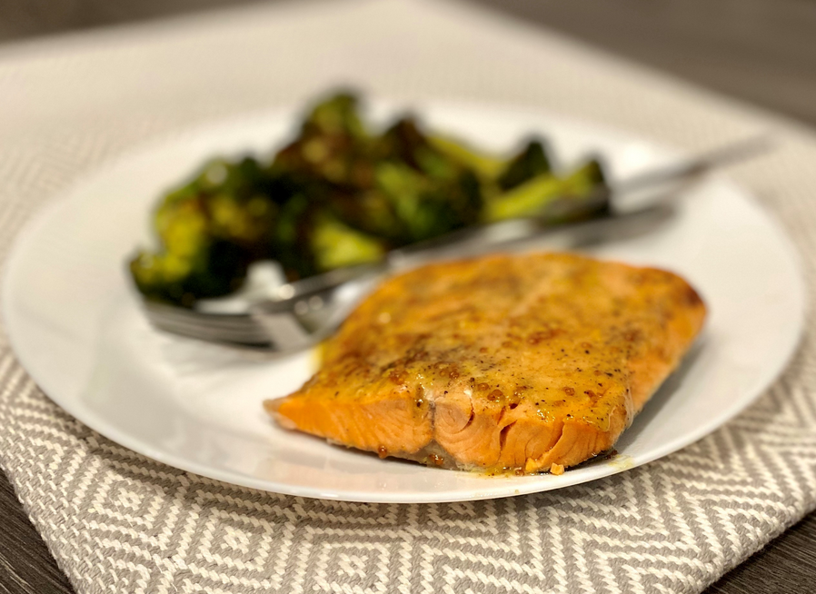

Instant Pot Honey Mustard Salmon

Description
Frozen salmon fillets are so economical, but I often forget to defrost them!
This recipe calls for adding frozen salmon fillets directly to your Instant Pot®
for a perfectly cooked fillet in mere minutes. I finish the salmon under the
broiler for just 2 minutes with a honey-mustard glaze on top. Delicious!
Ingredients
- 2 fillets frozen salmon fillets
- salt and ground black pepper to taste
- 1 cup water, or as needed
- 1 tablespoon honey
- 1 tablespoon whole-grain mustard
- 2 teaspoons olive oil
Steps
- Season frozen salmon fillets with salt and pepper. Place a trivet inside
a multi-functional pressure cooker (such as Instant Pot®) and pour in 1
cup of water, ensuring the water does not cover the trivet. Place fillets
skin-side down on the trivet in a single layer.
- Close and lock the lid. Select high pressure according to manufacturer's
instructions; set timer for 4 minutes. Allow 10 to 15 minutes for pressure to
build.
- Release pressure carefully using the quick-release method according to
manufacturer's instructions immediately after cooking time is over, about
5 minutes.
- Meanwhile, mix together honey, mustard, and olive oil in a small
bowl.
- Set an oven rack about 6 inches from the heat source and preheat the
oven's broiler to high. Line a baking sheet with parchment paper.
- Unlock and remove the Instant Pot® lid. Carefully transfer cooked fillets
onto the prepared baking sheet, skin-side down. Spread 1/2 of the
honey-mustard glaze over each fillet.
- Broil salmon fillets for 2 minutes. Serve immediately.